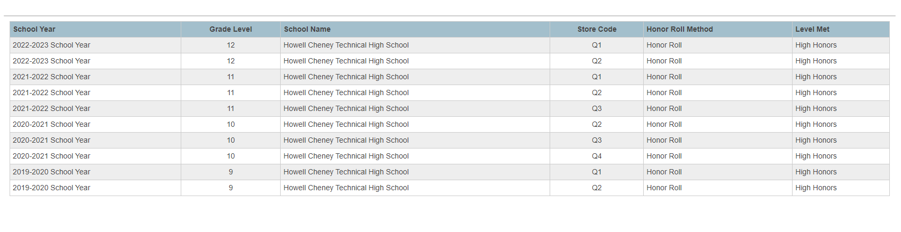

Honors
IST Creativity Award 2021
IST Leadership Award 2022


A creative way to send a message on a phone. I attached a keyboard and mouse to my phone, which does make it easier and faster to type on, yet it becomes much less portable.
IST Creativity Award 2021
IST Leadership Award 2022
A creative way to send a message on a phone. I attached a keyboard and mouse to my phone, which does make it easier and faster to type on, yet it becomes much less portable.
This is a non Google Sites portfolio.
Website created by Rob Reid.
2023-